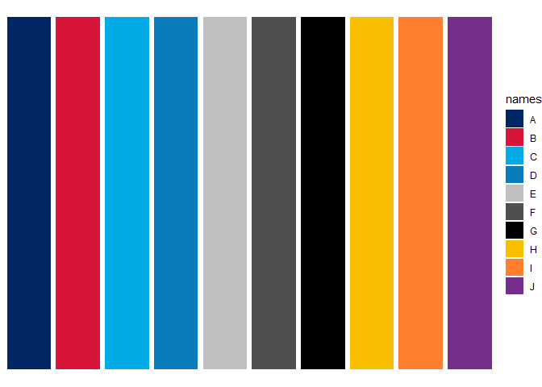

The goal of MoHReportR is to provide easy to use templates (colours, themes, Rmarkdown) for MoH related work using R.
Installation
You can install the development version from GitHub with:
# install.packages("devtools")
devtools::install_github("Shaunson26/MoHReportR")
library(MoHReportR)MoH colours
moh_colours is a function to return NSW government branding colours. Note: only 10 colours can be chosen and an error will be thrown if more are requested (you can choose the same colour multiple times though).
# show colours and names
moh_colours(show_colours = T)
# Return all colours
moh_colours()
#> [1] "#002664" "#D7153A" "#00ABE6" "#0A7CB9" "#BFBFBF" "#4F4F4F" "#000000"
#> [8] "#F9BE00" "#FF7F2F" "#752F8A"
# Return first 4 colours
moh_colours(1:4)
#> [1] "#002664" "#D7153A" "#00ABE6" "#0A7CB9"
# Return colours by name (see show_colours)
moh_colours(c('darkBlue', 'red'))
#> [1] "#002664" "#D7153A"
# Multiple colours
moh_colours(c(1,1,2,2))
#> [1] "#002664" "#002664" "#D7153A" "#D7153A"
moh_colours(1:11)
#> Error in moh_colours(1:11): Selected colour indicies can only be between 1 and 10.scale_fill_moh and scale_colour_moh can be used with ggplot2. Be vigilant of the number of groups input as there can only be 10.
library(ggplot2)
ggplot(data.frame(names = LETTERS[1:10],
vals = rep(1, 10)),
aes(x = names, y = vals, fill = names)) +
geom_col() +
scale_fill_moh() +
theme_void()
ggplot(data.frame(names = LETTERS[1:10],
vals = rep(1, 10)),
aes(x = names, y = vals, colour = names)) +
geom_col(size = 3, fill = 'white') +
scale_colour_moh() +
theme_void()
# 11 groups
ggplot(data.frame(names = LETTERS[1:11],
vals = rep(1, 10)),
aes(x = names, y = vals, fill = names)) +
geom_col() +
scale_fill_moh() +
theme_void()
#> Error in data.frame(names = LETTERS[1:11], vals = rep(1, 10)): arguments imply differing number of rows: 11, 10Functions
Age grouping
group_ages(ages = 1:100,
by = 5,
max_age = 95)
#> [1] 0-4 0-4 0-4 0-4 5-9 5-9 5-9 5-9 5-9 10-14 10-14 10-14
#> [13] 10-14 10-14 15-19 15-19 15-19 15-19 15-19 20-24 20-24 20-24 20-24 20-24
#> [25] 25-29 25-29 25-29 25-29 25-29 30-34 30-34 30-34 30-34 30-34 35-39 35-39
#> [37] 35-39 35-39 35-39 40-44 40-44 40-44 40-44 40-44 45-49 45-49 45-49 45-49
#> [49] 45-49 50-54 50-54 50-54 50-54 50-54 55-59 55-59 55-59 55-59 55-59 60-64
#> [61] 60-64 60-64 60-64 60-64 65-69 65-69 65-69 65-69 65-69 70-74 70-74 70-74
#> [73] 70-74 70-74 75-79 75-79 75-79 75-79 75-79 80-84 80-84 80-84 80-84 80-84
#> [85] 85-89 85-89 85-89 85-89 85-89 90-94 90-94 90-94 90-94 90-94 95+ 95+
#> [97] 95+ 95+ 95+ 95+
#> 20 Levels: 0-4 5-9 10-14 15-19 20-24 25-29 30-34 35-39 40-44 45-49 ... 95+
group_ages(ages = 1:100,
by = 10,
max_age = 50)
#> [1] 0-9 0-9 0-9 0-9 0-9 0-9 0-9 0-9 0-9 10-19 10-19 10-19
#> [13] 10-19 10-19 10-19 10-19 10-19 10-19 10-19 20-29 20-29 20-29 20-29 20-29
#> [25] 20-29 20-29 20-29 20-29 20-29 30-39 30-39 30-39 30-39 30-39 30-39 30-39
#> [37] 30-39 30-39 30-39 40-49 40-49 40-49 40-49 40-49 40-49 40-49 40-49 40-49
#> [49] 40-49 50+ 50+ 50+ 50+ 50+ 50+ 50+ 50+ 50+ 50+ 50+
#> [61] 50+ 50+ 50+ 50+ 50+ 50+ 50+ 50+ 50+ 50+ 50+ 50+
#> [73] 50+ 50+ 50+ 50+ 50+ 50+ 50+ 50+ 50+ 50+ 50+ 50+
#> [85] 50+ 50+ 50+ 50+ 50+ 50+ 50+ 50+ 50+ 50+ 50+ 50+
#> [97] 50+ 50+ 50+ 50+
#> Levels: 0-9 10-19 20-29 30-39 40-49 50+RMarkdown templates
MoHReportR provides an R markdown template that uses the NSW Government branding styles (https://www.nsw.gov.au/branding). This includes the Montserrat font and a corporate logo.
After installation, you will be able to select MoH templates from the file menu.
File > New File > R Markdown > From TemplateThis will open a R Markdown template from the MoHReportR package. Knit this document to see the template output.

template screenshot